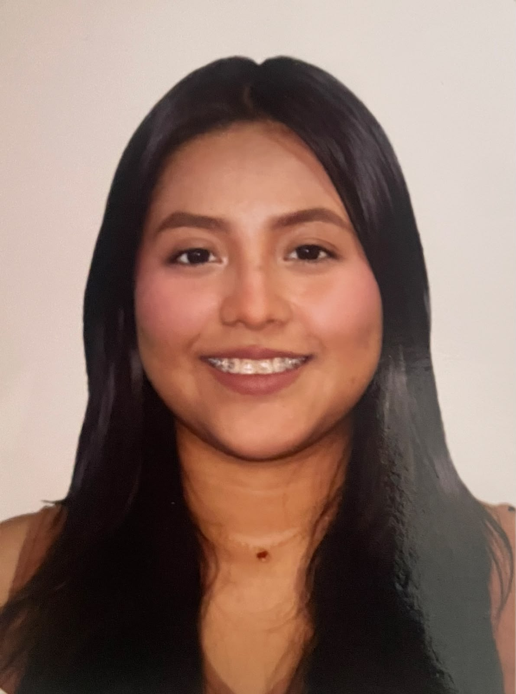

Ariana Nathaly Armijos Cabrera
Estudiante de Ingeniería en Sistemas de la Información (10mo Semestre)
📍 Guasmo Central, Guayaquil, Ecuador
📞 0963163216
📧 ariananac@icloud.com
Perfil Profesional
Soy una persona responsable, puntual, con muchas ganas de progresar, aprendo rápido y capaz de trabajar en equipo. Mi objetivo en la empresa es demostrar mis conocimientos ayudando al funcionamiento de la misma y, a su vez, adquirir nuevas experiencias para seguir formándome tanto personal como laboralmente.
Habilidades & Competencias
Experiencia Laboral
Personal de Atención al Cliente y Despacho — Importadora BloomsBaazar
Febrero 2026 - Agosto 2026
Responsable de brindar una excelente atención directa al público, asesoramiento en compras y despacho eficiente de mercancías. Apoyo eventual en la gestión de caja y cuadre de transacciones diarias.
Polifuncional (Dulcería) — Multicines
Junio 2025 - Septiembre 2025
Atención al cliente en dulcería, manejo de caja, preparación y venta de alimentos y bebidas, y control básico de inventario.
Asesora de Ventas — Skycell (Call Center)
Marzo 2024 - Agosto 2024
Experiencia en ventas consultivas de planes móviles Claro, con habilidades destacadas en negociación, cierre de ventas y atención al cliente.
Asesora de Ventas — Enlace Plus (Call Center)
Agosto 2023 - Enero 2024
Asesora de ventas en call center, especializada en la comercialización de una amplia gama de productos financieros, como seguros, protección de tarjetas de crédito y servicios de telemedicina.
Dependiente de Farmacia — Farmacias Piña
Marzo 2023 - Mayo 2023
Gestionaba el inventario farmacéutico, dispensaba medicamentos y mantenía un ambiente limpio y organizado.
Educación y Formación
Universidad de Guayaquil
Ingeniería en Sistemas de la Información — 10mo Semestre cursando virtual
Ecugenius S.A.
Certificación como Auxiliar en Farmacias
Instituto Speedwriting
Educación Secundaria Completa (2020)